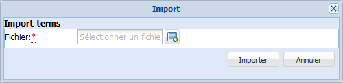

Import de Termes
ProcédureImporter des Termes⚓
La fonction Importer des termes permet de collecter du vocabulaire massivement et rapidement.
Vous avez créé une liste de termes dans un fichier au format .txt (à l'aide de Notepad++, par exemple).
AttentionAttention⚓
Les termes de votre liste doivent être :
rédigés de cette manière : terme@codeLangue ;
Exemples :
grelot@fr
school@en
encodés en UTF-8.
RemarqueRemarque⚓
En cas d'absence de langue, les termes sont importés avec la langue par défaut, déclarée lors de l'installation de l'application.
Cliquez sur le bouton
Importer des termesdu menu du vocabulaire.La fenêtre
Imports'affiche.
Cliquez sur le bouton pour sélectionner le fichier à importer.
Une fenêtre d'exploration de votre disque dur s'affiche.
Parcourez votre espace de stockage jusqu'au fichier à importer et sélectionnez-le par un double-clic.
Cliquez sur le bouton
Importerde la fenêtreImport.Les termes sont importés. Ils sont automatiquement classés dans les
Termes orphelins.ComplémentEn savoir plus....⚓
Pour en savoir plus sur les Termes orphelins et la manière de les rattacher à l'arborescence des concepts : Termes orphelins